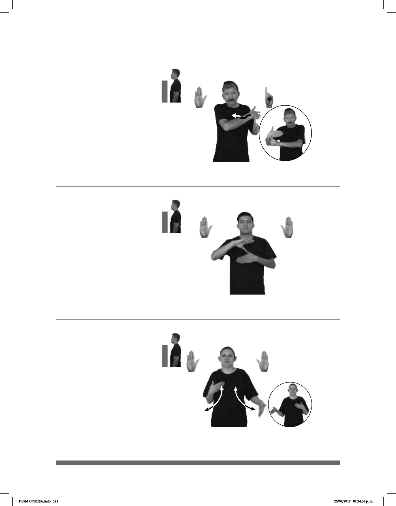

121
Seña: SB
MD B-P.2, MB 1.1
MD palma hacia adentro,
MB palma hacia la derecha.
MD a la altura del hombro,
del lado izquierdo al derecho, MB
sobre el dorso de MD.
MD ondulante.
sust. f. Vehículo para
transportar enfermos o heridos,
equipado con lo necesario para
auxiliarlos durante el trayecto al
hospital o al lugar donde serán
atendidos.
(B-P 31)
pos-MI MAMÁ SENTIR MAL AMBULANCIA tú-LLAMAR-a-él
Mi mamá se siente mal, llama a una ambulancia.
(B-P 32)
Andar
(B-P 33)
AMÉRICA pro-YO VIVIR
Vivo en América.
PARQUE LUGAR pro-ELLA ANDAR
Ella anda por el parque.
Seña: SB
MD y MB B-P.2
MD palma hacia afuera.
MB palma hacia adentro.
A la altura del pecho. MD
sobre MB.
No hay movimiento.
Simula la forma del
continente americano.
Continente situado entre
Seña: SS
B-P.2
Palmas hacia adentro.
A la altura del pecho.
Las manos se mueven
alternadamente hacia arriba y hacia
abajo mientras los antebrazos giran y
cambian la orientación de las manos.
Simula la acción de
caminar.
v. intr. Ir de un lugar a otro
dando pasos.
DLSM COMISA.indb 121 25/09/2017 02:24:06 p. m.